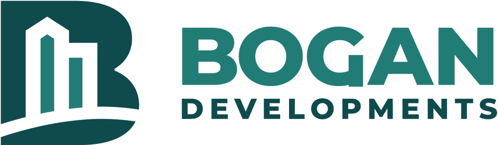
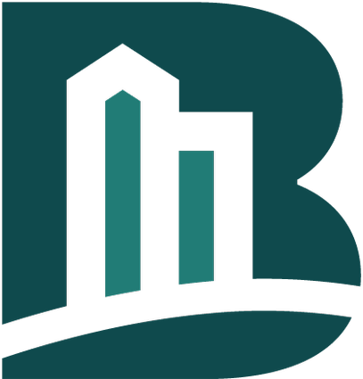
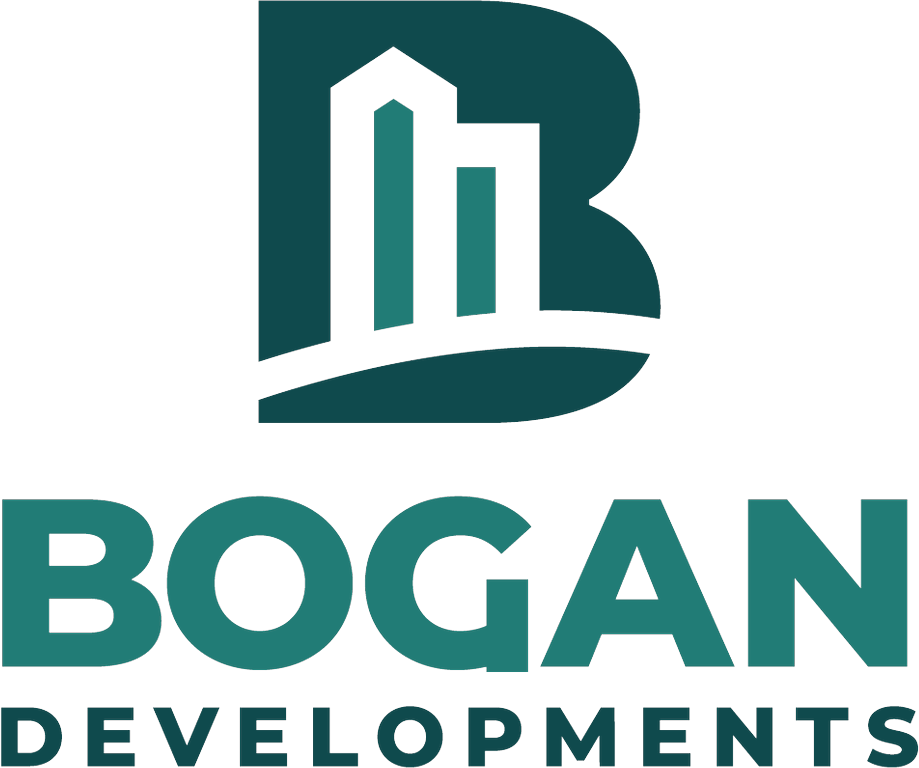
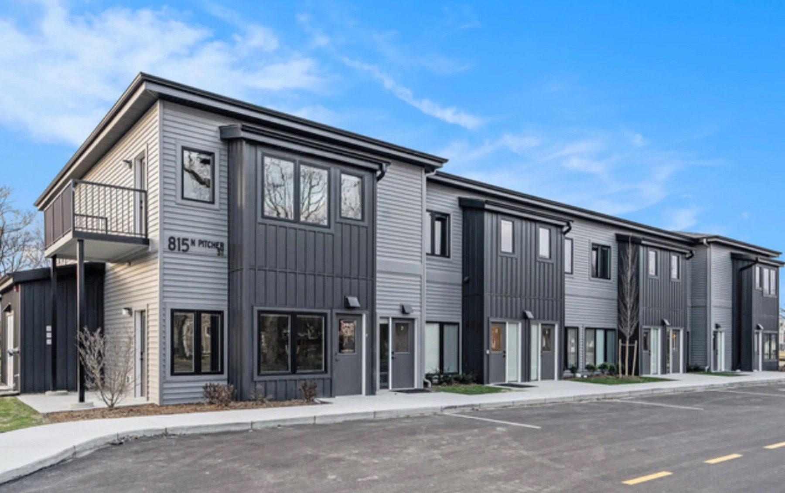
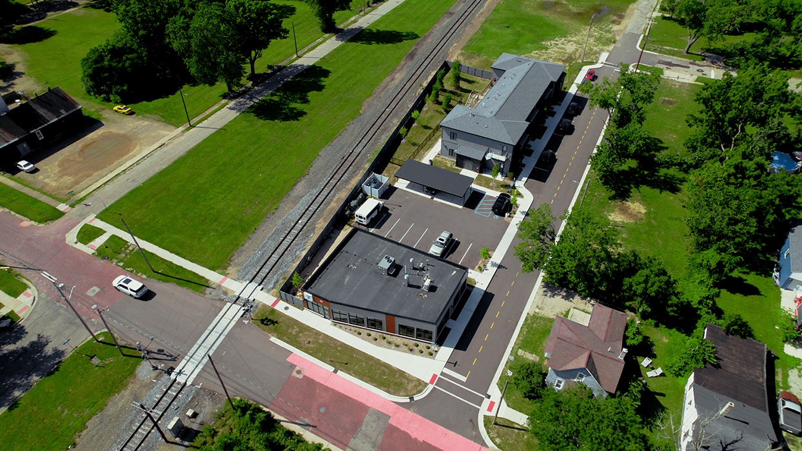
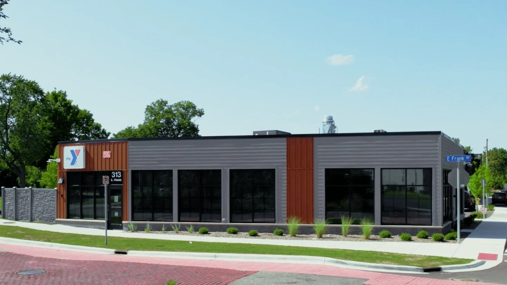
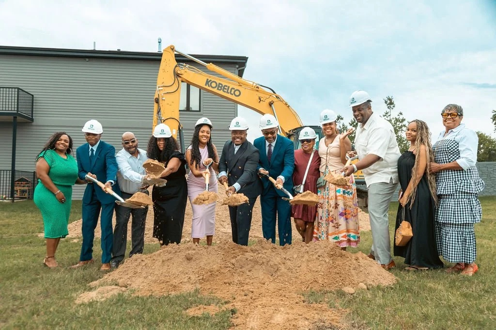
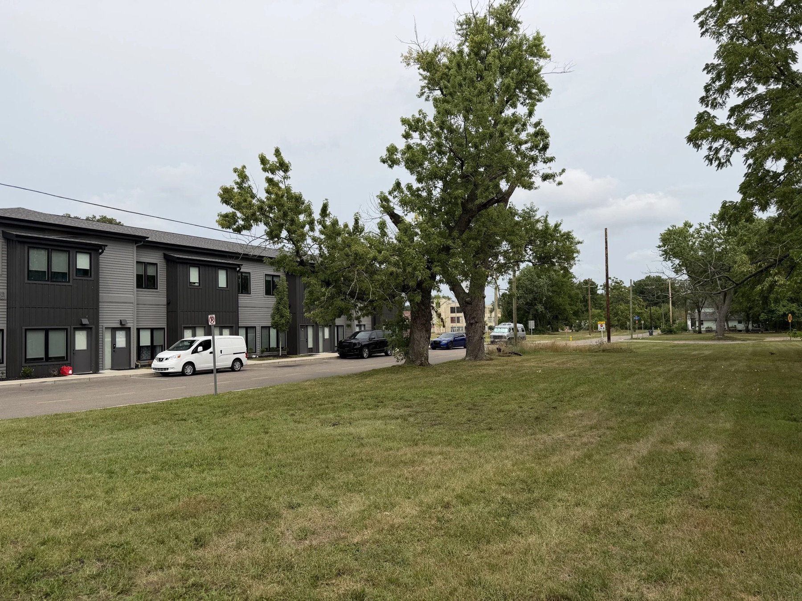
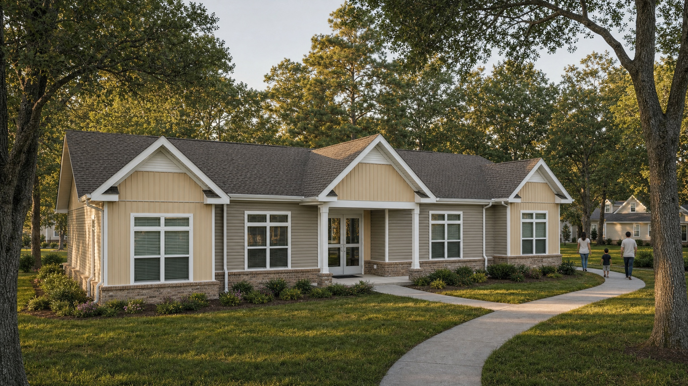

×Do not stretch or squash
Scale from a corner only.

The next version of the Bogan Developments brand: one mark, one palette, two typefaces, and a voice that answers for every home.
Bogan Developments is a minority-led real estate development firm in Michigan, founded in 2020. This book is the second version of its identity: the same teal mark, held in a system that can be checked.
Bogan Developments measures every home it builds against five words, Effort, Leadership, Impact, Teamwork and Execution, and publishes the record that answers each.
Four communities and sample layouts in one place, with the status of each stated plainly.
Employer-assisted housing puts homes within reach of the people an institution most needs to keep. The B on Burdick, planned with Bronson Healthcare, is the working model.
Every project is shown with its status, its cost and the public and private partners named in public.
Five words, and the record that answers each.
Zone 32 Phase I went up with no investors, on debt its founder personally signed for.
Developer of Zone 32 and The B on Burdick, and development partner at Lighthouse Ridge: 187 homes across four communities, delivered, under construction or planned.
A 1.4-acre brownfield on N. Pitcher Street became twelve homes and an early learning center. Phase II reclaims 0.6 acre more.
A health system, a state agency, a tribal investment arm and an architect, each named on the work: Bronson Healthcare, MSHDA, the Pokagon Band’s Mno-Bmadsen and TowerPinkster.
Phase I is delivered. Phase II broke ground on September 10, 2026, and targets fall 2027.
Peers lead with volume. Hollander Development says it has built over 4,000 homes since 1979 (hollanderdevelopment.com). Brinshore says 12,000+ units (brinshore.com). Both are claims about size, and either is open to anyone of that size.
ELITE is Bogan’s own language, so only Bogan can hold itself to it. And only Bogan can point at Zone 32: twelve homes delivered on a former brownfield on N. Pitcher Street, with thirty-eight more under construction across the street.
The position is therefore not a size claim. It is a commitment: every home measured against the five words, with its status, cost and sources in public.
Every home is answered for: what it is, what it cost, who funded it and where it stands.
DoState status, cost and the named funders on every project.
Don'tUse a figure that has no source.
DoSay thirty-eight homes, ten studios, eighteen one-bedrooms.
Don'tReach for an adjective where a count is available.
DoName the street, the neighborhood and the partner.
Don'tDescribe the firm with a claim the record does not show.
Version 1.0 is the identity and website live on November 5, 2026. Each 1.0 entry below is something the public site shows or lacks.
| Element | 1.0, the live site | 2.0 |
|---|---|---|
| Headline | The hero reads “Not just buildings”. | Belonging, to a standard. |
| Scale | The homepage shows no unit counts, dollars or pipeline. | A ledger below the hero: 12 homes delivered, 38 under construction, 137 planned or in development. |
| Status | No status system across projects. | Four statuses on every project: Delivered, Under construction, Planned, In development. |
| Project pages | The B on Burdick page runs 229 words, with no unit count, cost or timeline. | Every project page carries status, numbers, unit mix, milestones and named partners. |
| Colour | Repeated teal blocks, and a colourful row-house pattern used as a divider. | Bogan Green leads on Paper and Salmon, with Oxblood kept for the Standard band and Ink for type. No pattern; rules and numerals divide the page. |
| Header | A cart icon sits in the header. | No cart. Navigation names four routes: Projects, The Standard, Find a home, Work with us. |
| Action | One generic contact form. | Two routes by audience: Find a home, and Work with us for lenders, funders, employers and public agencies. |
| Photography | Generic stock photographs of hands and hard hats. | Bogan’s own photographs and the architects’ renderings, each captioned, every rendering labelled. |
| Logo | The teal B and wordmark, as one artwork. | The same artwork, unchanged, with a proposed reduced B for small sizes, a proposed stacked lockup and proposed single-colour versions. |
1.0: the live bogandevelopments.com as audited on November 5, 2026. 2.0: The Standard direction as built in the redesign prototype.
The teal B and wordmark stay as drawn. Nothing in this book redraws them.
Bogan Developments, at 801 N Pitcher Street, Kalamazoo.
Effort, Leadership, Impact, Teamwork, Execution remain the firm’s own language, and become the organising idea.
The tagline stays. The 2.0 headline, Belonging, to a standard, extends it.
Jamauri Bogan, Founder and CEO, built Phase I with no investors, on debt he personally signed for.
Bronson Healthcare, MSHDA, Kalamazoo County, the City of Kalamazoo, TowerPinkster, AVB and the rest are named in public.
The teal B with its wordmark is Jamauri Bogan’s approved logo and is not redrawn here. Bogan 2.0 specifies how it is used and proposes additions cut from the same artwork: a reduced B for small sizes, a stacked lockup and single-colour versions. Every addition is tagged Proposed.

ApprovedLogo, full colour. The approved artwork, unchanged.

ProposedReduced mark, for sizes where the wordmark cannot be read. The B alone, cut from the approved artwork.

ProposedStacked lockup, for square and narrow spaces. The same two parts, stacked.
ProposedLogo in White on Ink.
ProposedReduced mark, White on Bogan Green.
ProposedStacked lockup, Bogan Green on Salmon.
ProposedLogo in Bogan Green on Blush.
ProposedReduced mark, White on Oxblood.
ProposedStacked lockup, White on Teal.
ProposedLogo in White on a photograph.
ProposedStacked lockup, White on a photograph.
ProposedReduced mark, White for one-colour production.
Keep clear space equal to x on every side, where x is the cap height of BOGAN in the wordmark. Nothing enters the space: no type, no edge, no detail of a photograph.
Logo 180 px wide on screen, 45 mm in print. Stacked lockup 120 px, 30 mm. Reduced mark 24 px, 6 mm. Below 180 px wide, switch to the reduced mark rather than shrink the wordmark until DEVELOPMENTS stops reading.
Scale from a corner only.
The baseline stays level.
Full colour on Paper, Bogan Green on Salmon and Blush, White on Ink, Bogan Green, Teal, Oxblood and photographs, and in one-colour production such as embroidery, vinyl and stamps.
No shadows, glows, bevels or outlines.
Keep x clear on every side.
Use the supplied artwork, never a retyped wordmark beside the B.
Full colour sits on Paper only. On Oxblood or Salmon use a single-colour version.
A B set in a typeface is not the mark. Use the supplied reduced mark.
Bogan Green and Teal come straight from the logo and lead the brand, with Seafoam and Mist as lighter steps of the same hue. The complementary colours sit across the wheel from the green: Teal is at 176 degrees, so its exact opposite is 356, and Oxblood at 7, Brick at 9, Salmon at 21 and Ochre at 32 are the warm side of that pairing. Ink is for type.
A guide for page area: 60% Paper, 25% Salmon, 10% Bogan Green, 5% Oxblood. Ink is the type colour and sits outside the split.
Ratios are computed from the hex values above, not typed. Normal text needs 4.5:1.
| Foreground | Background | Ratio | WCAG AA normal text |
|---|---|---|---|
| Ink | Paper | 17.96:1 | Pass |
| Ink | Salmon | 12.75:1 | Pass |
| Ink | Blush | 14.79:1 | Pass |
| Soft | Paper | 6.47:1 | Pass |
| Soft | Blush | 5.32:1 | Pass |
| Soft | Salmon | 4.59:1 | Pass |
| Oxblood | Paper | 11.48:1 | Pass |
| Oxblood | Salmon | 8.15:1 | Pass |
| Oxblood | Blush | 9.45:1 | Pass |
| Linen | Oxblood | 10.10:1 | Pass |
| Clay | Oxblood | 6.82:1 | Pass |
| Linen | Ink | 15.80:1 | Pass |
| Clay | Ink | 10.68:1 | Pass |
| Bogan Green | Paper | 9.97:1 | Pass |
| Teal | Paper | 4.99:1 | Pass |
| Teal | Salmon | 3.54:1 | Never for text |
| Bogan Green | Salmon | 7.08:1 | Pass |
| Bogan Green | Blush | 8.20:1 | Pass |
| Linen | Bogan Green | 8.77:1 | Pass |
| Clay | Bogan Green | 5.93:1 | Pass |
| Mist | Ink | 13.89:1 | Pass |
| Mist | Bogan Green | 7.71:1 | Pass |
| Mist | Oxblood | 8.87:1 | Pass |
| Ink | Seafoam | 8.57:1 | Pass |
| Ink | Mist | 13.89:1 | Pass |
| Ink | Ochre | 7.20:1 | Pass |
| Linen | Brick | 4.85:1 | Pass |
Checked by script, not by eye. The check simulates protanopia, deuteranopia and tritanopia (Machado 2009, severity 1.0) and measures the OKLab distance between the closest pair. The minimum is deltaE 12.
| Set | Vision | Closest pair, deltaE | Result |
|---|---|---|---|
| Oxblood and Ink | normal | 17.8 | Distinct (min 12.0) |
| Oxblood and Ink | protan | 11.2 | Too close (min 12.0) |
| Oxblood and Ink | deutan | 17.0 | Distinct (min 12.0) |
| Oxblood and Ink | tritan | 19.3 | Distinct (min 12.0) |
| Oxblood, Teal and Salmon | normal | 26.4 | Distinct (min 12.0) |
| Oxblood, Teal and Salmon | protan | 27.0 | Distinct (min 12.0) |
| Oxblood, Teal and Salmon | deutan | 18.3 | Distinct (min 12.0) |
| Oxblood, Teal and Salmon | tritan | 29.5 | Distinct (min 12.0) |
Oxblood and Ink come too close under protanopia, so the system never separates two things by those two colours alone. The four project statuses differ by fill, marker and outline, and always carry their words.
Read from The Standard's own stylesheet: Besley for headlines and figures, Literata for text. Both are variable fonts, self-hosted as WOFF2 files, and neither supplies an italic. On the web, body text runs at 18px and display type scales with the screen, up to 178px in the home hero. The scale below is the fixed tier for documents and print.
Headlines, project names and figures. Weight 400, tracking -2.2%, line-height 1.04. The file runs 400 to 900; the site also uses 500 for the header name.
Body copy, captions, tables and forms. 18 px on the site with line-height 1.62. The file runs 300 to 800.
Kickers, status labels and buttons. Uppercase, tracked +14%, 12 to 13 px. The prototype sets kickers in browser-made italic; 2.0 moves them here.
Base 16 px. Body copy starts at 16 px; nothing falls below 13 px. Body line-height 1.5 or more.
A Besley headline over Literata text. Figures are Besley. Kickers and status labels are Literata 600 capitals. Besley never sets a paragraph and Literata never sets a headline.
Figures are the loudest thing on a Bogan page. Set them in Besley at display size, in tabular numerals, with the unit in Literata beside them.
Generous leading, short lines and one clear jump in size between headline and body.
No italic, which neither file supplies. No outlined type, no script fonts, no all-caps paragraphs, no more than two families on a page.
Photograph what has been built, as it was built, in daylight and straight on. People appear as themselves and are named in the caption. Renderings stand in for what is not yet built and are always labelled.





What is not yet built is shown as a rendering, and the word is printed on the image as well as in the caption. Lighthouse Ridge appears only as an illustrative rendering.
Rendering Rendering
Rendering
Illustrative renderingLive HTML examples of the parts a Bogan page reuses. Bogan Green is the action, Ink is structure, and status is always written out.
Status is carried by fill, marker, outline and the word itself, never by colour alone.
RenderingN. Pitcher Street, Northside Kalamazoo
Ten studios, eighteen one-bedrooms and ten two-bedrooms, with a community room and outdoor recreation. $10.6 million.
“A complete neighborhood is walkable, has access to groceries, a place to get your haircut, housing, and neighborhood amenities—paired with improved infrastructure where people can live, work, and play.”Jamauri Bogan, CEO. Source: bogandevelopments.com
Write the way a careful developer talks to a lender, a resident and a city council: a number, a name, a date. Facts before adjectives. No emojis. Jamauri Bogan is he and him in every document.
Say thirty-eight homes, not a new chapter.
State where a figure comes from the first time it appears.
The record is the confidence. Skip the exclamation point.
The message stays the same and the proof changes with the reader. Every line below comes from the record in this book.
| Reader | What they are asking | What we say | The proof |
|---|---|---|---|
| People looking for a home | Is there a place for me, and can I afford it? | Pick a layout, walk it in 3D and check your income. | Four communities and their sample layouts in one place. |
| Employers | Can my people live near their work? | Housing is how you keep the people you need. | Bronson Healthcare will lease 20 homes for its employees at The B on Burdick. |
| Lenders and funders | Will this get finished, and can I see the record? | Every project shows its status, its cost and its partners. | Phase I is delivered. Phase II broke ground on September 10, 2026, and targets fall 2027. |
| Cities and agencies | What does this do for the neighborhood? | Land that sat empty, back in use. | A 1.4-acre brownfield on N. Pitcher Street became twelve homes and an early learning center. |
Bogan Developments is a minority-led real estate development firm in Michigan, founded in 2020. It builds affordable and workforce housing, measures every home against five words, Effort, Leadership, Impact, Teamwork and Execution, and keeps the record public.
How the brand should feel before anyone reads a word. Every colour, photograph and sentence is checked against these.
The confidence of someone who has the record in hand.
Never loud or boastful.
A place you are glad to come home to, and people who know the street.
Never charitable or pitying.
Real streets, real partners, a neighborhood you can name.
Never corporate or placeless.
The CSS custom properties used by this page. Every Bogan surface reads from this list; nothing is picked by eye.
:root{
--soft:#6E5A52;
--salmon:#F3D3C2;
--linen:#FBEEE6;
--clay:#E8BFAD;
--teal-deep:#0F4A4D;
--teal:#217C76;
--text:#241210;
--paper:#FFFFFF;
--ground:#F7E6DA;
--dark:#241210;
--dark2:#6F1A0E;
--on-dark:#FBEEE6;
--on-dark-muted:#E8BFAD;
--accent:#6F1A0E;
--accent-on-dark:#E8BFAD;
--metal:#6F1A0E;
--muted:#6E5A52;
--line:rgba(36,18,16,.16);
--warn:#241210;
--btn-bg:#0F4A4D;
--btn-fg:#FBEEE6;
--radius:0;
--display:Besley,Georgia,serif;
--display-w:400;
--display-ls:-.022em;
--body:Literata,Georgia,serif;
--label:Literata,Georgia,serif;
--label-w:600;
--green:#0F4A4D;
--seafoam:#7FBFB5;
--mist:#CDE8E2;
--brick:#B5432F;
--ochre:#D9964A;
}